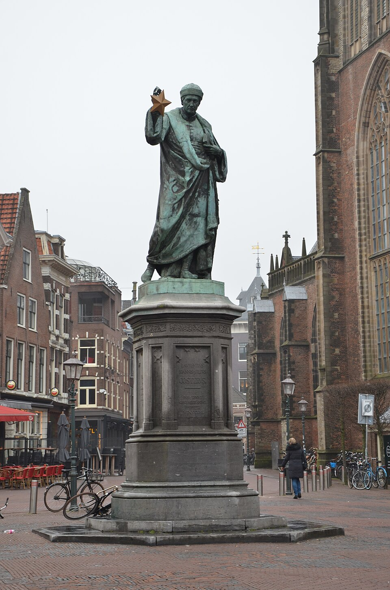
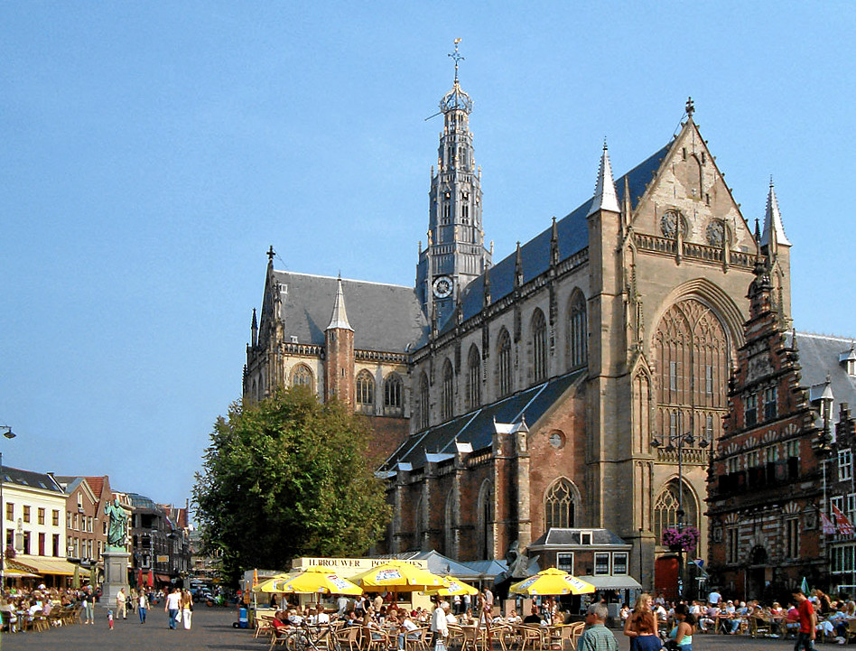
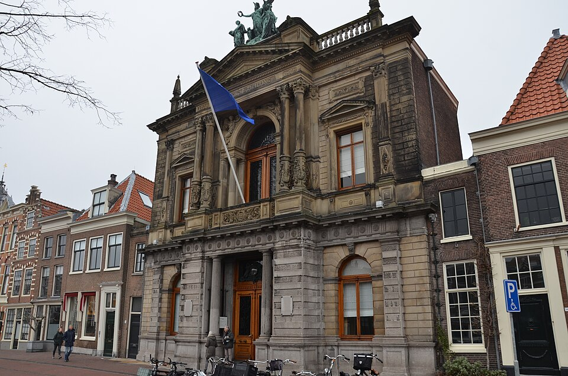
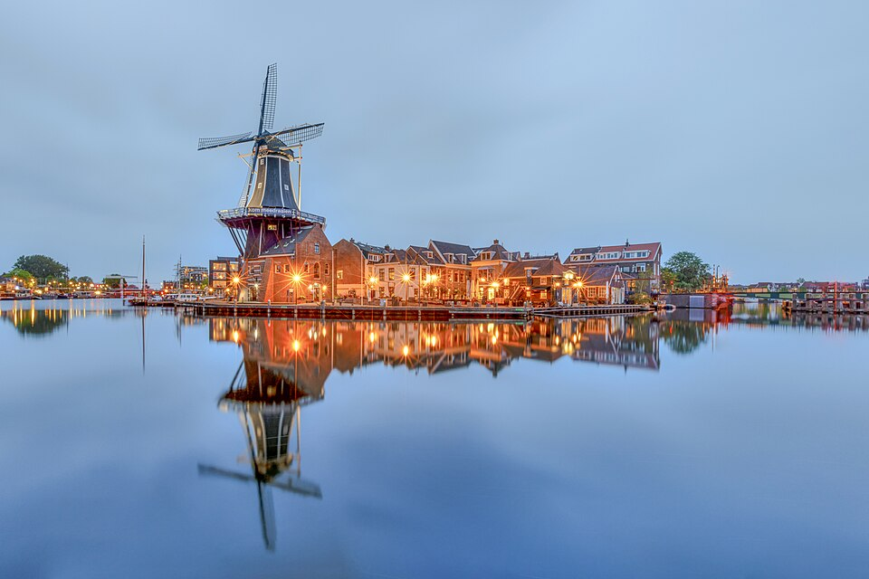
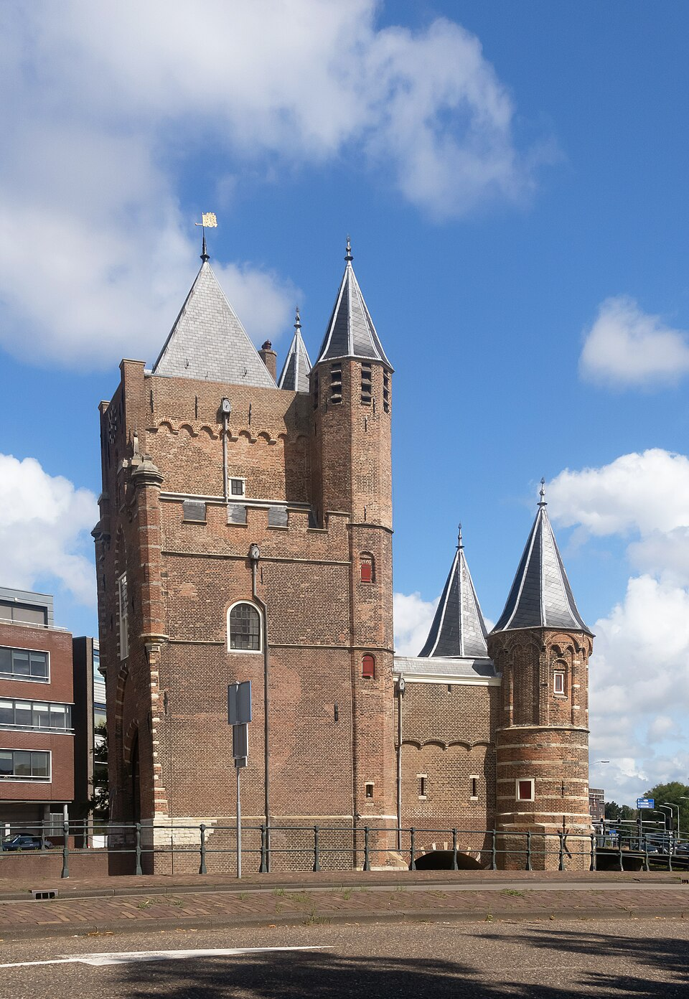
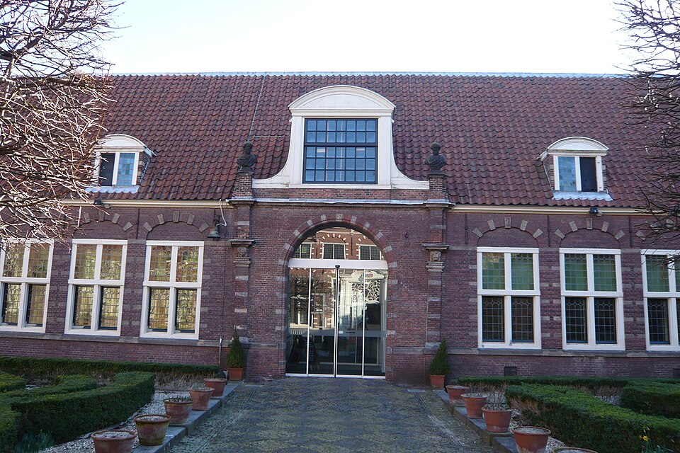
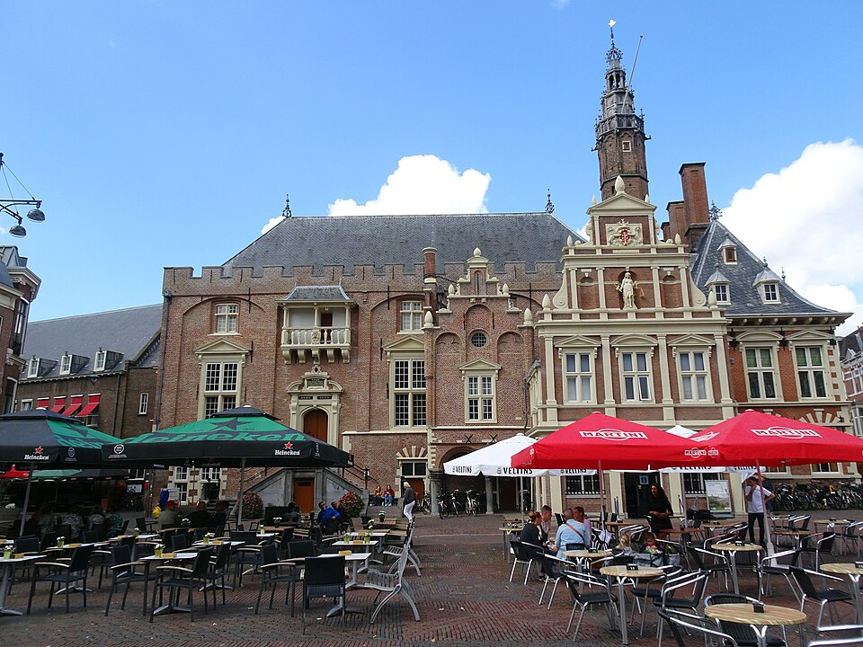

Volg de hints
Los de opdracht op
Verdien punten
Audiotour
Deel je score
21 stops door de binnenstad
Van een eeuwenoud standbeeld tot een molen die ooit afbrandde: een greep uit de route.

Standbeeld Laurens Janszoon Coster
Een bronzen Haarlemmer die, volgens de legende, de boekdrukkunst uitvond, nog vóór Gutenberg.

De Sint-Bavokerk
De Grote Kerk torent al eeuwen boven de Grote Markt uit, met het beroemde Müller-orgel binnen.

Teylers Museum
Het oudste museum van Nederland: een tijdscapsule vol fossielen, elektriseermachines en oude tekeningen.

Molen De Adriaan
Een iconische molen aan het Spaarne, ooit tot de grond toe afgebrand en daarna helemaal herbouwd.

Amsterdamse Poort
De laatste overgebleven stadspoort van Haarlem, ooit één van meer dan twintig.

Frans Hals Museum
Ooit een oudemannenhuis, nu de plek waar het werk van Haarlems beroemdste schilder hangt.

Stadhuis Haarlem
Al eeuwenlang het bestuurlijke hart van de stad, met een gevel vol geschiedenis.
En nog 14 andere stops, die ontdek je onderweg.
Hoe goed ken jij Haarlem écht?
Elke opgeloste stop levert punten op. Kom je er zelf niet uit, dan kan je een extra hint opvragen of het antwoord laten zien; dat kost wel wat punten, dus bewaar ze voor als je ze nodig hebt.
Aan het eind van de tour zie je je score, je tijd en hoeveel hints je gebruikte, en kan je 'm delen op een scorebord met andere deelnemers.
Klaar om Haarlem te ontdekken?
Start de digitale speurtocht en wandel op jouw tempo langs de mooiste en meest verrassende plekken van de stad.
Start de tour nuGemaakt om Haarlem te leren kennen als een local
Geen haastige groepen, geen vaste tijden: gewoon jij, je telefoon en de verhalen van een stad die al eeuwenlang mensen weet te verrassen. Alles werkt gewoon in je browser, geen app nodig.